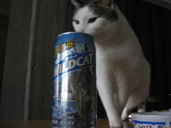
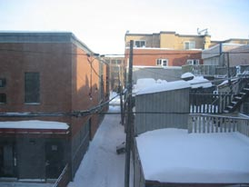

Happy New Year to everyone. We earn an extra second this year. Make it count.
#31 December 2005 | Comments (1)
Felix Cubin & Wojtek Kucharczyk - Territerrortorium
This record rocks... try combing the Polish and German national anthems to a beat that make your nose bleed. This was created from a series of outtakes from the radio play "Kubinski & the Complainer" broadcasted on Deutschlandradiokultur in 2004. Step into a scary chasm of experimental electronic kultur and buy this recording.
#30 December 2005 | Comments (0)
Kick off 2006 with the Extraordinary Dancing Bazaar; New Year's Day at the Old Blue Last (Great Eastern Street, London) with the Bazaar All-Stars and very special guests (check www.extraordinarydancingbazaar.com for updates). You've heard the hype now check it for yourselves, freak shows-fashion shows, vibrating chair and a right rocking party. What better way to meet your friends, catch up, carry on the NYE celebrations. This event will start when we get there.
#29 December 2005 | Comments (3)
Carlos Aires, 31, from Madrid has faced contoversy over his latest comment on globalisation; his posters which include actors sporting masks in compromising positions have been trashed as nothing more than porn. The masks include the Queen, Jacques Chirac, Tony Blair and George W Bush. Aires claims they show "the most recent changes in Europe and the resulting spacial constructions". They will be on over 400 bill boards in Vienna over the next six weeks, hopefully they will still be up for next month's EU confererence.
#29 December 2005 | Comments (1)
So while more people are entering the arts and entertainment industries than ever before, some of us are content with just recycling existing works and giving them new life and sometimes new meaning. I was recently introduced to the Trailer Parody. It involves creating new trailers from existing material. From the few I've seen, this usually means turning the subject on its head.
But don't content yourself with my poor, opinionated explanation. Check out the following links (they're funny as shit):
#28 December 2005 | Comments (0)

This is a picture of Iris. She drank my WildCat 950.
They're still looking for her.
#25 December 2005 | Comments (1)
Concrete and Clay present Visions of Mamed: David and MAMED, together at last this Christmas.
visions_of_mamed_-_christmas_on_murder_mile.mp3
3.38MB | Download | Stream
#23 December 2005 | Comments (7)

#23 December 2005 | Comments (0)
1 banana, 1 pint of milk, 75ml dark rum, ice, nutmeg to taste.
Put ingredients in a blender, blend for a minute or so and serve in nice glasses.
#23 December 2005 | Comments (2)
A Russian scientist last week finally discovered a method through which to interpret the apparently mindless tweeting of birds in the Upper Volta. It had occured to the scientist whilst walking home from his laboratory one evening, smelling in the sounds and tweets of the birds in the trees around him, that the quawkings might be the birds communicating with one another. As an experiment he had whistled a tone in mimicry of a blackbird in the tree of a churchyard and found that the bird replied in the exact melody of his whistle. Somehow the brief understanding between bird and human disconcerted the scientist, who became fearful that the birds were crying out some message or warning that he was unable to understand. This set him on a heady path of discovery, and he constructed a delicate machine from fibre optic antennas and biomechanical hearing devices that would be able to interpret the the Language of Birds into American english. After months of toil, the results were published in last week's Journal of Russian Science. The scientist discovered the following communication to have occurred, "Tweet tweet tweet. Tweeet. Tweeet tweet squark tweet."
#22 December 2005 | Comments (1)